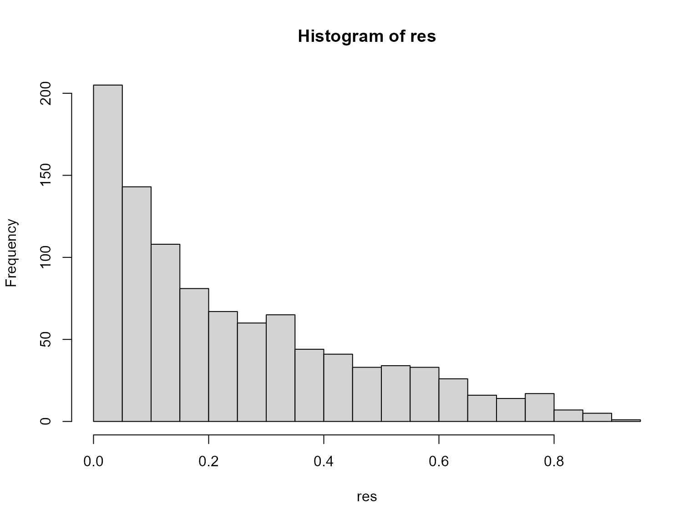

Probability Sensitivity Analysis (PSA)
Nathan Green
2026-07-01
Source:vignettes/probability-sensitivity-analysis.Rmd
probability-sensitivity-analysis.RmdIntroduction
Probability Sensitivity Analysis (PSA) is a core part of any cost-effectiveness analysis (Briggs et al. 2012). Here, we will carry this out for a simple decision tree. This involves repeatedly sampling from a distribution for each branch probability and cost and calculating the total expected value for each set of realisations.
Example
Load the required packages.
library(CEdecisiontree, quietly = TRUE)
library(assertthat, quietly = TRUE)
library(tibble, quietly = TRUE)
library(tidyverse, quietly = TRUE)
library(purrr, quietly = TRUE)We first define the decision tree. The difference to previous trees is that we now use list-columns to define distributions rather than point values. Also, notice that we do not specify distributions for all of the probabilities. We only need to sepcify a distribution for one of the two branches and this will also ensure that they will sum to one as necessary.
tree_dat <-
list(child = list("1" = c(2, 3),
"2" = NULL,
"3" = NULL),
dat = tibble(
node = 1:3,
prob =
list(
NA_real_,
NA,
# list(distn = "unif", params = c(min = 0, max = 1)),
list(distn = "unif", params = c(min = 0, max = 1))),
vals =
list(
0L,
list(distn = "unif", params = c(min = 0, max = 1)),
list(distn = "unif", params = c(min = 0, max = 1)))))
tree_dat
#> $child
#> $child$`1`
#> [1] 2 3
#>
#> $child$`2`
#> NULL
#>
#> $child$`3`
#> NULL
#>
#>
#> $dat
#> # A tibble: 3 × 3
#> node prob vals
#> <int> <list> <list>
#> 1 1 <dbl [1]> <int [1]>
#> 2 2 <lgl [1]> <named list [2]>
#> 3 3 <named list [2]> <named list [2]>Fill missing complementary probabilities
##TODO:
fill_complementary_probs(tree_dat$dat)We can now loop over this tree and generate samples of values for the given distributions. We use the sample_distributions() function to do this. This is all wrapped up in the convenience function create_psa_inputs().
tree_dat_sa <- create_psa_inputs(tree_dat, n = 1000)This results in a list of trees.
head(tree_dat_sa, 2)
#> [[1]]
#> $child
#> $child$`1`
#> [1] 2 3
#>
#> $child$`2`
#> NULL
#>
#> $child$`3`
#> NULL
#>
#>
#> $dat
#> node prob vals
#> 1 1 NA 0.0000000
#> 2 2 NA 0.8343330
#> 3 3 0.08075014 0.6007609
#>
#> attr(,"class")
#> [1] "tree_dat" "list"
#>
#> [[2]]
#> $child
#> $child$`1`
#> [1] 2 3
#>
#> $child$`2`
#> NULL
#>
#> $child$`3`
#> NULL
#>
#>
#> $dat
#> node prob vals
#> 1 1 NA 0.000000000
#> 2 2 NA 0.007399441
#> 3 3 0.1572084 0.466393497
#>
#> attr(,"class")
#> [1] "tree_dat" "list"Doing this explicitly can be a good idea because we can save and reuse the same random sample input data. Now, it is straightforward to map (or loop) over each of these trees to obtain the total expected values.
# # a single run
# res1 <- dectree_expected_values(tree_dat_sa[[1]])
res <- map_dbl(tree_dat_sa, ~dectree_expected_values(.)[1])
head(res)
#> [1] 0.04851152 0.07332099 0.36481208 0.13514540 0.01377626 0.01245663We see from the associated histogram that the expected total value is
hist(res, breaks = 20)
For simplicity, we have also provided a single wrapper function to perform these two steps.
res <- dectree_expected_psa(tree_dat, n = 1000)